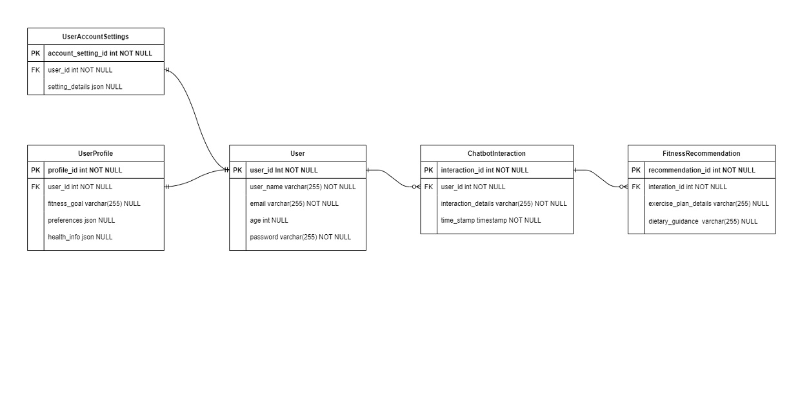
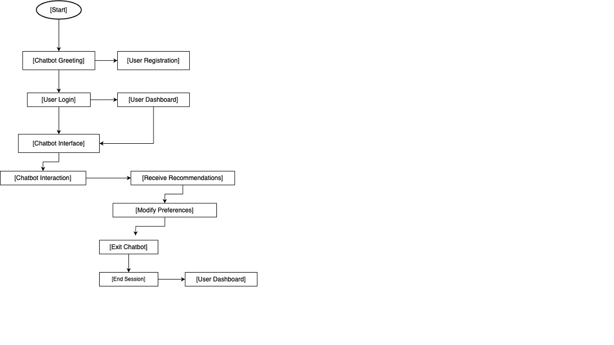
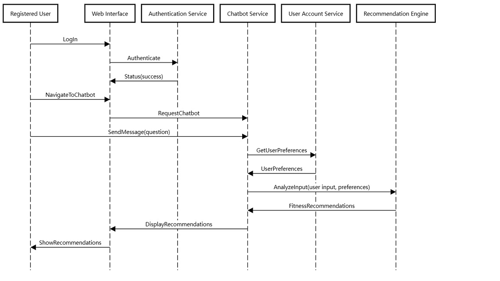
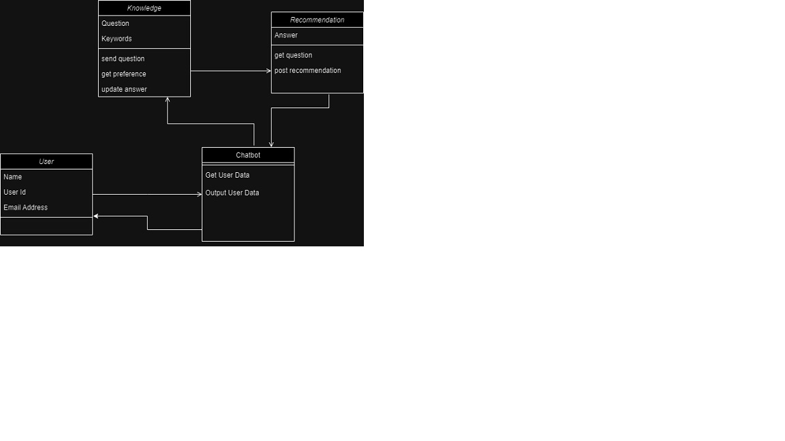
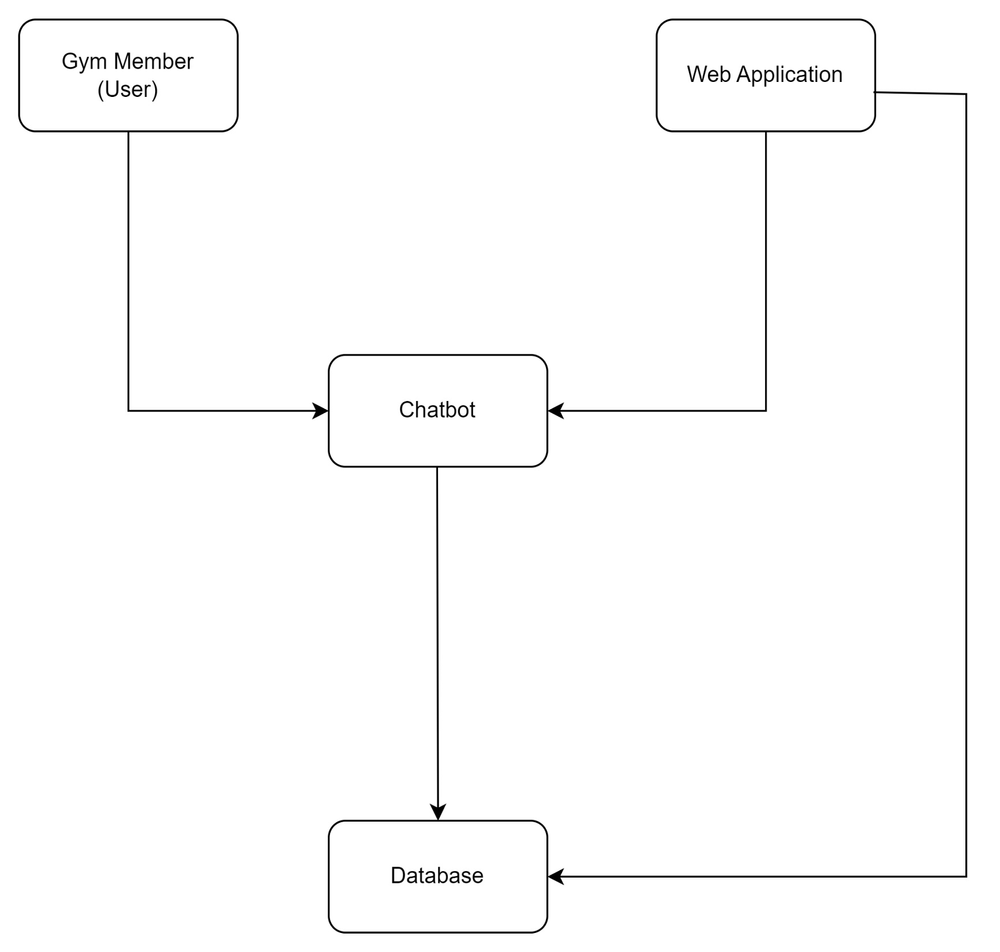

The Introduction section provides an overview of the system using software requirements analysis and design for the scope of the system.
1.1 Purpose
This section provides an overview of the system using software requirements analysis and design for the scope of the system. The purpose of this document is to define the high-level software requirements for the Raptors Fitness Center Chatbot-Enabled Web App.
1.2 Scope
The scope of this document encompasses the high-level requirements analysis and design for the Raptors Fitness Center Chatbot-Enabled Web App project. It outlines the system's functional and non-functional requirements, helping to establish a framework for the system's development process.
2.0 System Overview
2.1 Raptors Fitness Center Chatbot-Enabled Web App Description
The Raptors Fitness Center Chatbot-Enabled Web App is intended to be a user-friendly, AI-powered fitness center web application that offers personalized guidance and recommendations to clients, enhancing their fitness journey experience. This document provides a foundational understanding of the project's context and requirements, focusing on the system's design and functionality.
2.2 Project Perspective
The Raptors Fitness Center Chatbot-Enabled Web App is a self-contained system developed to address the lack of personalized fitness guidance and support in the fitness industry. It is designed to operate within the fitness center's organizational structure and improve the overall fitness journey experience for clients.
2.3 System Context
The system is situated within the business case of Raptors Fitness Center and addresses the strategic need for enhanced fitness services. It involves strategic issues related to fitness center services and aims to provide clients with personalized fitness guidance and recommendations.
2.4 General Constraints
The development of the software is constrained by budget limitations and the need for compatibility with common web browsers and mobile devices. Compliance with data privacy regulations, such as GDPR or HIPAA, must be maintained. Additionally, the system development should be completed within the specified timeframe, and the availability of third-party APIs for personalized workout plans and nutritional recommendations may be a constraint.
2.5 Assumptions and Dependencies
Several assumptions have been made during the project's initiation, including that users will have internet access for registration and login, users will provide accurate and valid information during the registration process, users will use the system to track their progress consistently, and data storage will comply with relevant data protection regulations.
3.0 Functional Requirements
3.1.1 Chatbot Interaction Introduction:
The chatbot interaction feature allows users to engage with a virtual fitness assistant through the web application.
Inputs:
User-provided fitness goals, preferences, and health information.
User inquiries and requests.
Processing:
The chatbot uses natural language processing (NLP) and AI-driven analysis modules to interpret and respond to user inputs.
Analyzes user-provided data to understand goals and preferences.
Outputs:
Personalized fitness recommendations, exercise plans, and dietary guidance.
Real-time responses and guidance.
Progress tracking and monitoring.
3.1.2 User Account Management Introduction:
User account management facilitates user registration, login, and personalized user experiences.
Inputs:
User registration details (e.g., name, email, age).
Login credentials.
Processing:
User data validation and authentication.
User profile creation.
Outputs:
User accounts with personalized settings.
Profile information storage.
Secure access to the web application.
3.2 Use Cases
Use Case 1: User Registration and Onboarding
Actor: New User
Description: This use case describes the process of a new user registering and onboarding onto the Chatbot Enabled Fitness Center Web App.
Use Case 2: Receiving Personalized Fitness Recommendations
Actor: Registered User
Description: This use case outlines the steps involved when a registered user interacts with the chatbot to receive personalized fitness recommendations.
3.3 Data Modelling and Analysis
Normalized Data Model Diagram

Activity Diagram

Sequence Diagram

UML Class Diagram

3.4 Process Modelling
Data Flow Diagram

4.0 Non-Functional Requirements
Performance:
The web application should respond to user interactions with minimal delay.
At least 95% of user interactions should be processed and responded to in less than 2 seconds.
Chatbot response time should not exceed 1 second for routine inquiries.
The system should handle concurrent users without significant performance degradation.
Reliability:
The system should operate with high reliability to ensure continuous service availability.
System downtime may not exceed 1 minute per day for maintenance purposes.
Regular backups of user data and chatbot conversation history should be maintained to prevent data loss.
Availability:
The web application should be available 24/7, allowing users to access it at any time.
Availability should not be less than 99.9% uptime.
Security:
User data, including personal information and health-related data, should be stored securely.
Compliance with data privacy regulations (e.g., GDPR) must be maintained.
User authentication and authorization should be in place to protect user accounts.
The system should have protection against common web application security vulnerabilities (e.g., SQL injection, cross-site scripting).
Maintainability:
The system should be designed with modular and maintainable code.
Regular updates and maintenance should be carried out to ensure system security and performance.
A change management process should be in place to handle updates and new feature additions while minimizing disruption to users.
Portability:
The web application should be accessible across common web browsers (e.g., Chrome, Firefox, Safari) without compatibility issues.
Users should be able to access the application on various devices, including desktops, laptops, tablets, and mobile phones, without functionality loss.
5.0 Logical Database Requirements
In the development of the Raptors Fitness Center Chatbot-Enabled Web App, a database will be utilized to store and manage user data, chatbot conversation history, and other essential information. The logical database requirements are as follows:
Data Formats:
The database should support various data formats, including text, numerical data, and binary data for storing user profiles, questionnaire responses, chatbot dialogues, and multimedia content.
Storage Capabilities:
The database should have sufficient storage capacity to handle a growing user base and the associated data.
Data storage should be scalable to accommodate future data expansion.
Data Retention:
User data, including profile information and fitness-related data, should be retained for as long as the user maintains an account with the fitness center.
Historical chatbot conversation data will be retained to track user progress and provide personalized recommendations.
Data Integrity:
Data integrity constraints should be implemented to ensure data accuracy, consistency, and reliability.
The database should support transaction management to maintain the integrity of data during concurrent operations.
Data Security:
User data should be encrypted to protect sensitive information.
Access controls and user authentication should be implemented to prevent unauthorized access to the database.
Regular database backups should be performed to prevent data loss in case of system failures or errors.
Scalability:
The database should be designed to handle an increasing amount of data as more users join the fitness center and use the web application.
The database should support horizontal scaling to distribute the data load efficiently.